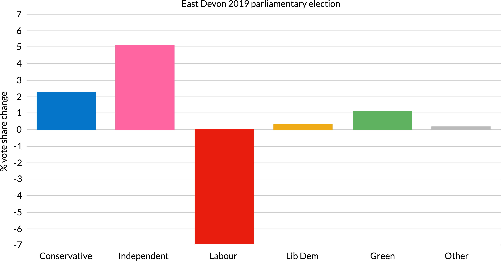
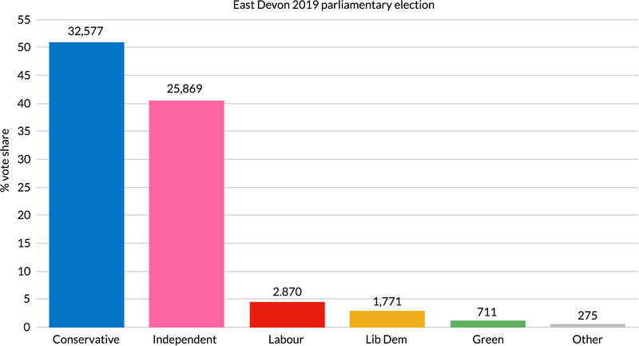
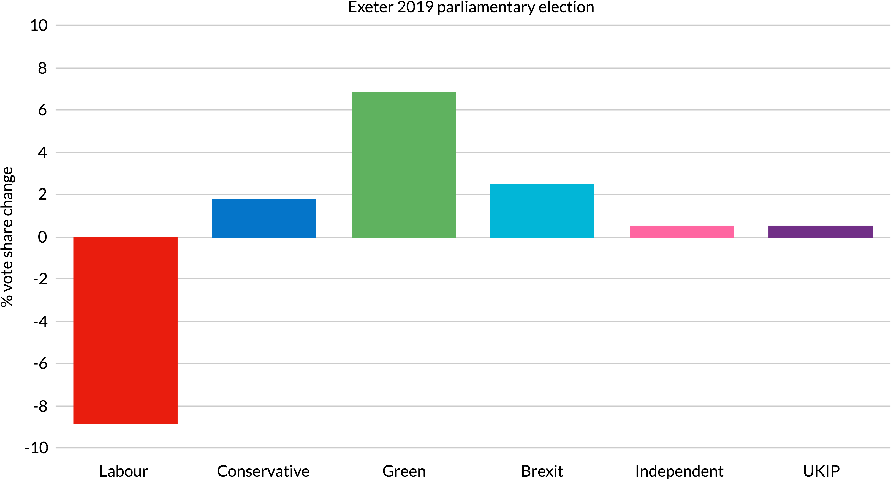
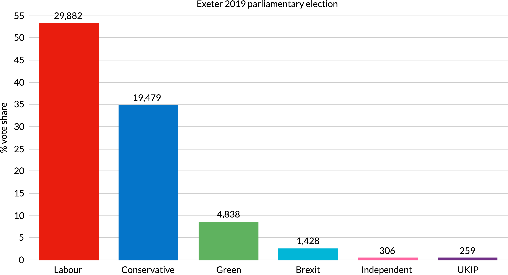
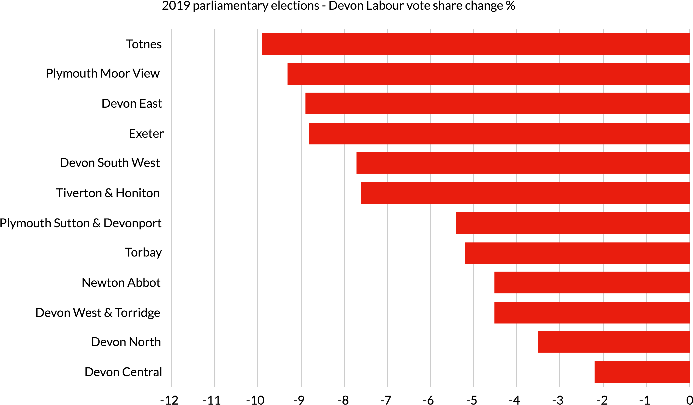
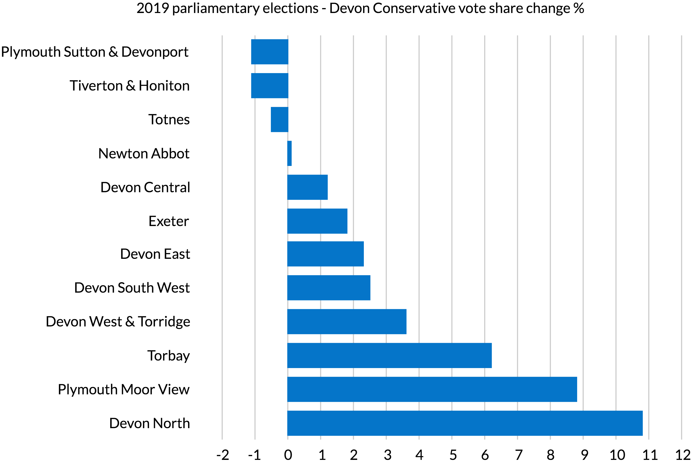

Apart from Devon East, where independent candidate Claire Wright was well-positioned to challenge 150 years of Conservative representation at Westminster, few people expected any of Devon’s twelve parliamentary constituencies to change hands at this election.
As predicted, a sea of blue still surrounds Exeter and Plymouth Sutton & Devonport, both of which Labour held with reduced majorities.
The only South West seat that changed hands was Stroud, which has been marginal since 1997. Labour lost 5% of its vote share, while the Green Party increased its vote share by the same amount, turning a Labour majority of 687 into a Conservative majority of 3,840.
The only South West MPs outside Devon that are now not Conservative are the four in Bristol, all of whom held their seats for Labour, and Bath’s Liberal Democrat, who bucked the national trend to increase her majority mostly at her Conservative rival’s expense.
But the surge of support that produced extraordinary results for the Conservatives in other parts of the country was not replicated across Devon, with some candidates losing vote share on 2017’s results and others only managing to increase theirs by a couple of percentage points.
`` 
In East Devon, where Independents won 31 district council seats in May, up 18, to take control of the local authority from the Conservatives for the first time in its 45 year history, Claire Wright was expected to do well against newcomer Simon Jupp, having increased her vote share from 24% in 2015, the first time she stood in the seat, to 35% in 2017.
Her grassroots campaign generated widespread support and interest, with hundreds of posters and banners visible across the constituency and national media attention reflecting its prominence.
However, despite the exit poll prediction that she had a 96% chance of winning, a high turnout of 74% and her vote share increasing to over 40%, Simon Jupp ended the night with a reduced Conservative majority of 6708 on a share of nearly 51%.
Before the ballot there had been criticism of the Greens and Liberal Democrats for failing to stand down in favour of Unite to Remain proposals to back Claire Wright as the constituency’s strongest remain candidate, but the count revealed that so few votes were cast for the other four candidates that put together they still fell short of the winning margin.
Labour’s vote share notably fell by nearly 7%, leaving all four unable to reclaim their deposits.

Exeter’s May local elections had seen new Liberal Democrat, Green and Independent councillors elected, although Labour retained 29 of 39 seats on the city council, and an October county council byelection had resulted in a collapse of support for Labour in Heavitree & Whipton Barton where the Green and Liberal Democrat vote shares both increased by more than 11%.
However Labour incumbent Ben Bradshaw, who has held the seat since the 1997 Labour landslide, was defending a large majority of 16,000 having increased his vote share by 16% in 2017 and so was expected to win comfortably.
In the event a 9% vote share loss saw his majority reduced to just over 10,000 on a turnout of 68%, down 3% from 2017.
The Conservative party’s vote share increased by nearly 2%, but Green Party candidate Joe Levy notably increased his vote share by nearly 7% to nearly 9% of the ballots cast, supported by 5,000 voters.
The Liberal Democrat candidate stood down in the constituency, which no longer includes St Loyes or Topsham since their 2010 transfer to Devon East, as part of the Unite to Remain campaign pact.

Luke Pollard did rather better for Labour in the party’s other Devon seat, Plymouth Sutton & Devonport, where he won with 2,000 fewer votes than in 2017 on a share that shrunk by 5%. The turnout of 68% was up by a point and a half.
He had taken the seat in 2017 with 13% of the vote and a majority of 7,000 but now has the smallest majority among Devon MPs, making his constituency the most marginal in the county.
He nevertheless successfully saw off the Conservative candidate Rebecca Smith, whose vote share was 1.1% lower than her predecessor’s. Ann Widdecombe came third for the Brexit Party with sufficient vote share to avoid losing her deposit, but too few votes to have handed victory to the Conservatives had pro-Brexit support not been split.

Conservative Neil Parish also lost 1.1% of the vote share in Tiverton & Honiton, which covers half of East Devon district and half of Mid Devon district, in both of which Independents did well in the May local elections.
He nevertheless increased his majority to 24,000 to comfortably hold the seat with 60% of the ballots cast on an unchanged 72% turnout.
Labour’s vote share fell by 8%, most of which apparently went to the Liberal Democrats who nevertheless still finished third.
The Conservative candidate in Totnes, Anthony Mangnall, who was selected to run against previous incumbent Sarah Wollaston after she resigned from the party in February, also saw his party’s vote share shrink slightly compared with 2017.
He nevertheless comfortably held the seat, which covers the eastern half of South Hams and parts of Torbay, with 53% of the votes giving him a majority of nearly 13,000 on a 75% turnout, up nearly 2%.
Sarah Wollaston had joined the Liberal Democrats in August after co-founding The Independent Group for Change in parliament.
Despite benefiting from the Unite to Remain electoral pact and increasing the Liberal Democrat vote share by 16% to nearly 29%, her defection has cost her a place in parliament, where she previously played a prominent role as chair of the health select and liaison committees.
Labour’s Totnes vote share fell by 10% to under 9,000, the biggest drop in the county.

Anne Marie Morris, who had been suspended from the Conservative Party between July and December 2017 for making a racist remark at a Brexit report launch event, comfortably held the Newton Abbot constituency. Her vote share was unchanged at 55%, giving her a majority of 29,000 on a slightly increased 73% turnout.
Liberal Democrat success at the local elections in May, when the party nearly doubled its seats on Teignbridge District Council to take control from the Conservatives, was not replicated at the general election. The party’s modestly increased vote share of 22% was, however, enough to push Labour into third place.
Mel Stride’s performance in Devon Central was slightly better, increasing his vote share by a little over 1% on a high 77% turnout to give him a majority of nearly 18,000. The Labour vote share only fell by 2% here, leaving the party in second place well clear of the Liberal Democrats.
The constituency, which covers parts of East Devon, Mid Devon, West Devon and Teignbridge districts as well as Dartmoor, is the third largest in the country. It is the only one without a conurbation with a population of more than 10,000: Bovey Tracey, Okephampton and Crediton all have fewer than 8,000 residents.
Devon parliamentary constituency and district council boundaries.
Contains OS data © Crown copyright and database right 2019.
Devon South West has been held for the Conservatives since 1997 by Gary Streeter, who was previously MP for nearby Plymouth Sutton before its absorption into what is now Luke Pollard’s seat in 2010.
He is a prominent Christian MP who has chaired Christians in Parliament for over a decade and has controversially attempted to overturn an Advertising Standards Authority ban on faith healing claims.
His vote share increased by 2.5% to give him a 21,000 majority with 62% of the vote, 6,000 larger than in 2017. Turnout was slightly down at 74%.
Labour support fell by 8% while Liberal Democrat vote share increased by 7%, but Labour retained second place with a 22% share, twice that of the Liberal Democrats.
Geoffrey Cox has held neighbouring Devon West & Torridge since he overturned a small Liberal Democracy majority in 2005.
He was appointed Attorney General by Theresa May in 2018, subsequently placing him at the centre of the prorogation controversy that saw Parliament unlawfully suspended in September.
His vote share increased by 3.6%, largely at the Labour candidate’s expense, to give him a majority of nearly 25,000 on a 75% turnout, up 1%. As a result Labour fell to third place behind the Liberal Democrats.
Devon West & Torridge is the largest constituency in the country by area, covering all of Torridge and most of West Devon districts. Okehampton, which had previously been in the seat, was transferred to Central Devon in 2010.

Kevin Foster performed better for the Conservatives in the Torbay constituency, which covers most, but not all, of the unitary authority area of the same name, Brixham being part of the neighbouring Totnes constituency.
His vote share increased by over 6% on a turnout matching the UK average of 67%, giving him an increased majority of nearly 18,000. The Liberal Democrats came second, as they have since 2015 after previously holding the seat from 1997.
Johnny Mercer held Plymouth Moor View more emphatically for the Conservatives, increasing his vote share by nearly 9% at the Labour Party’s expense and more than doubling his majority to nearly 13,000 on a turnout of 64%, down 2%.
He controversially took a second job in 2018 which paid £85,000 for 20 hours’ work a month, equivalent to £350 per hour, and has been challenged several times over his campaign and parliamentary expenses.
He was appointed as a junior defence minister earlier this year and sits on the Health and Social Care Select Committee.
The Devon Conservative vote share increased most of all in Devon North, the only constituency in the county to coincide with its namesake district, despite the Conservatives losing control of the council in May to the Liberal Democrats.
Newcomer Selaine Saxby, who was elected as a district councillor in May, saw the Conservative vote share rise by nearly 11% to boost the party’s majority to 15,000 on an unchanged 73% turnout.
The Liberal Democrats have historically performed well in this seat: it was held for their Liberal predecessors by party leader Jeremy Thorpe from 1959 to 1979 and again by Nick Harvey from 1992 to 2015, so the loss of 8% of the vote share and the scale of the Conservative victory is all the more remarkable.
Selaine Saxby is the first female MP to represent the constituency and one of only two women representing the county in Parliament. 220 female MPs have been elected, 12 more than the previous peak in 2017, but they still only constitute just over a third of the House of Commons.
Meanwhile Electoral Reform Society analysis of results across the country has revealed that while the 865,000 people who voted for the Green Party will be represented by a single MP, each of the SNP’s 48 Westminster MPs only needed 26,000 votes to take a seat in Parliament.
At the same time 45.3% of votes were cast for losing candidates, so none of those votes will be represented in Parliament at all.


{kind=link}